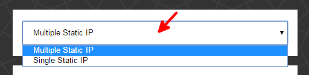
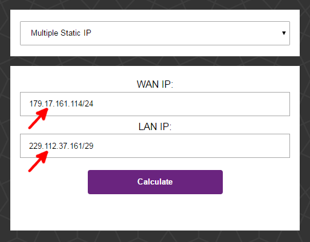
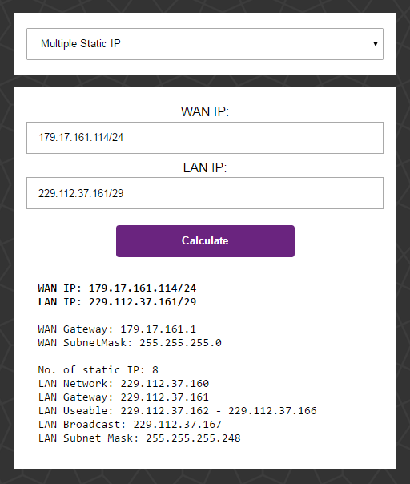

Javes
Subnet Calculator
Multiple Static IP
Single Static IP
WAN IP:
LAN IP:
How to use
How to use
Select the "type" of static IP - multiple or single static IP

Input the IP address(es) in
CIDR notation

The CIDR notation has 3 decimal dots and 1 slash
Example of an IP address in CIDR notation: 179.17.161.114/24
Single
static IP requires just one IP address (which is actually the WAN IP). The number after the slash is likely "24" (needs confirmation)
Multiple
static IP requires both WAN and LAN IP addresses. The number after the slash for the WAN IP is likely "24" (needs confirmation)
Click on "Calculate"
Profit!
